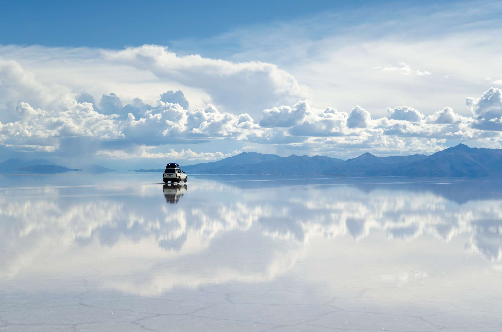
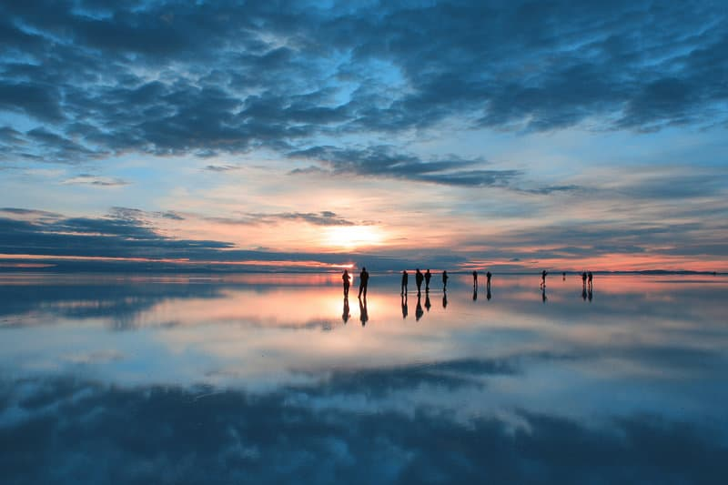

HOME
1. Salar de Uyuni, Bolivia

Frozen in the depths of winter, the world’s largest salt flat is transformed in to
a giant sky-reflecting mirror during rainy season (September-May).
The pools left over from this monumental prehistoric lake create a shimmering,
illusory horizon, making it one of the best places to visit in the world if you like a good trick shot or selfie.
